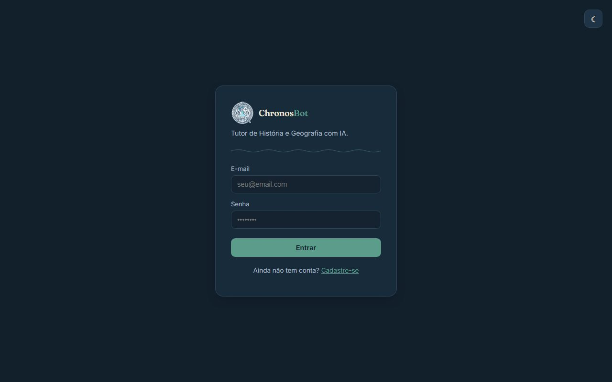

Projeto principal · no ar
ChronosBot
Tutor de História e Geografia com IA. O professor monta a base de conhecimento de cada turma e os alunos fazem perguntas; as respostas são geradas pelo Gemini com RAG em cima desse material.
- Embeddings gerados em paralelo com ThreadPoolExecutor (5 workers).
- Banco no Neon, API no Render e frontend na Vercel.